Case Study 2 - Intro to Amua
Amua
Amua is an open source/free modeling framework & probabilistic programming language.
The program allows modeling of Decision Trees and Markov Models. - Models can be run as cohort or individual-level simulations (ie., microsimulation)
Getting started
You will first need to install Java (1.8 or later) & download Amua. Follow the directions here
Here is a comprehensive tutorial to get you started. We review some highlights below:
Please note that this case study is based on the Amua tutorial here. We have modified the tutorial to make it more relevant to the workshop.
Overview of Decision Problem
In this example problem, you must decide whether or not to implement a screening program for a certain disease (Dx). Assume that persons testing positive will be treated, which improves their life expectancy. For disease-positive individuals who are not screened, assume that treatment will be delayed until they become symptomatic and that they have a lower life expectancy than those who receive immediate treatment.
For disease-negative individuals who are inappropriately treated, assume that there is a decrease in their life expectancy due to drug toxicity. The screening test is imperfect with a sensitivity of 0.97 and a specificity of 0.9988. The prevalence of the disease in this population is 0.05. The objective is to maximize life expectancy. As alternative strategies, you could not screen anyone, or you could simply treat everyone without screening first.
Step 1: Create a new model
First you need to create a new model
In Amua, on the menu at the top, go to Model -> New -> Decision Tree.
Step 2: Add Strategies
Adding Branches
To add branches to this decision node (the root of the tree) you have a few options:
Double-click: Double-click on the node to add two branches with chance nodes . Note that if the node already has branches, double-clicking will add one branch.
Right-click: Right-click on the node to display the pop-up menu. Select Add -> and choose the node
type you wish to add.Toolbar: Select the node and click on a node type in the toolbar at the top to add it to the tree.
For the example in this tutorial, double-click on the root decision node , which will add two branches.
:::
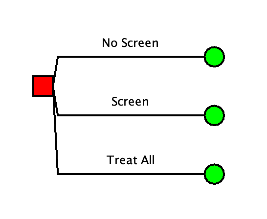
Step 3: Build Out the Strategies
No Screen
- Double-click on the No Screen chance node to add 2 branches.
- Name the top branch D+ and the bottom branch D-.
- Click the Optimize Current Display (OCD) button on the toolbar to arrange the branches and ensure even spacing.
Add Terminal Nodes
- Right-click on each of the child nodes and select Change to Terminal Node. You may also change node types on the toolbar or add a new terminal node using the toolbar or pop-up menu.
If you are using a Mac computer, you may have some difficulty double-clicking using the Control button. An alternative trick to try is to click your mousepad with two fingers simultaneously.
Your tree should look like this:
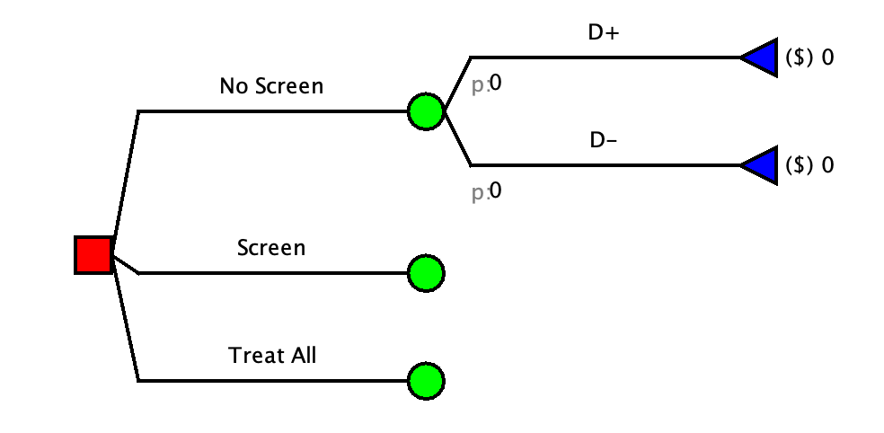
Screening Strategy
Adapt the Screen strategy to include a chance node indicating the probability of a positive test result.
Double-click on the Screen chance node to add two more branches. Name these “Test +” and “Test -”.
Add in terminal nodes for “D+” and “D-”, as in Step 2 above.
Your decision tree should now look like this:
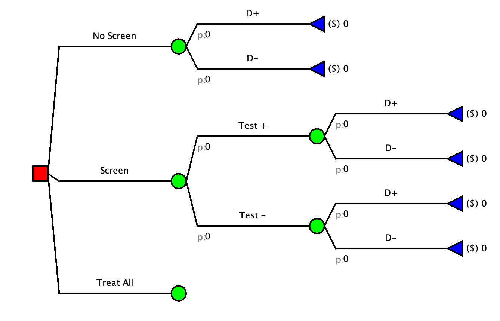
Treat All Strategy
You can now complete the structure of the decision tree by adding in the remaining terminal nodes for the Treat All strategy.
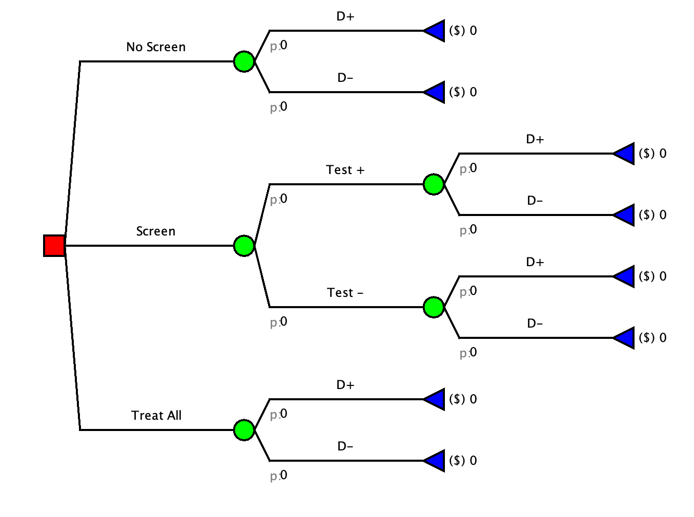
Step 4: Save
- You can save at any time by clicking on Model -> Save or using the keyboard shortcut (Windows: Ctrl-S. Mac: Cmd-S).
- When saving for the first time, a dialog box will appear asking for the name of the model.
- Choose the location where you want to save the model, enter
Dx_Screenas the file name, and click Save.
Step 5: Define Model Outcomes
By default, model outcomes (called model ‘dimensions’ in Amua) track Costs, denoted by the $ symbol inside parentheses. In this model, our outcome of interest will be Life Expectancy.
- To change the outcome of interest, go to the menu bar and click
Model -> Propertiesand select theAnalysistab. - In this tab, rename the dimension from Cost to Life Expectancy, change the symbol to LE, and choose 2 decimal places for precision.
- Make sure that you hit Enter once you change the value in a table cell. The cell border will turn light blue once the cell is updated.
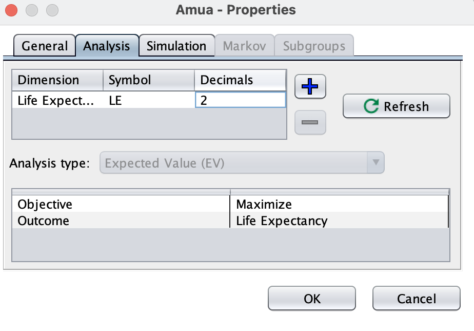
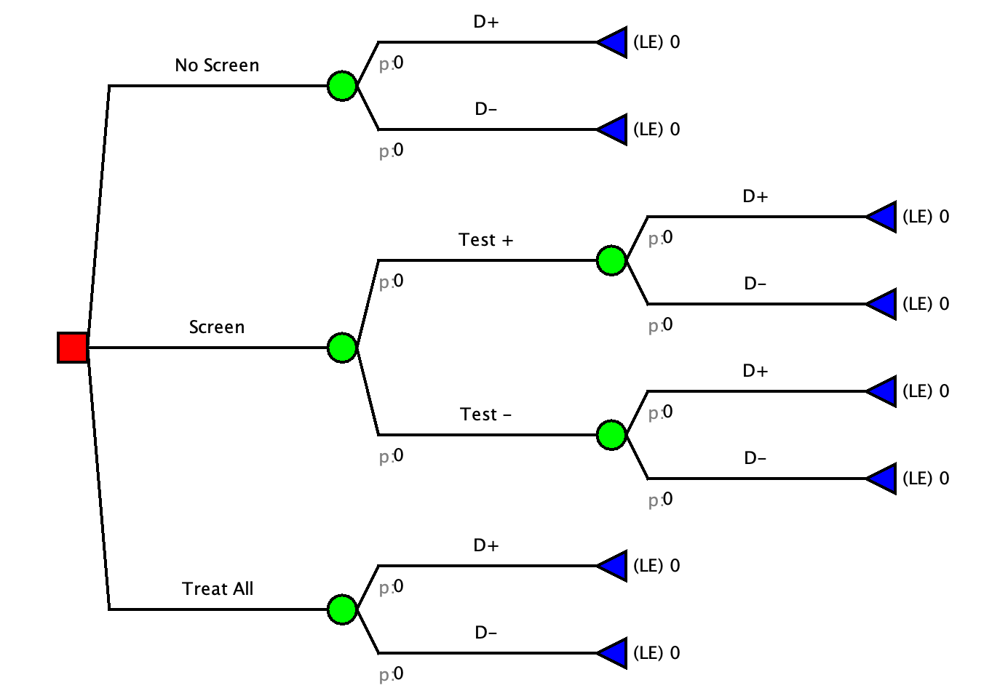
Step 6: Define Probabilities
Now we will assign probabilities to the branches of chance nodes .
Disease Prevalence
For the branch
No Screen, click underneath the branch labeled D+ (next to the label p:). A text-entry box will now be outlined in blue. This is where you enter the probability for this branch.Type
prevwhich we will define as the prevalence of the disease. Hit Enter or click outside the text-box to accept the probability.The text will now turn red because Amua does not recognize prev as a model object, so we will have to define it later.
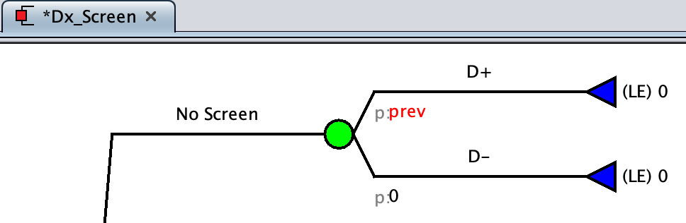
Complementary Probabilities
Now enter the probability for the D- branch for
No Screen.Because the probabilities for all branches of a chance node must sum to 1.0, we could enter
1-prevas the probability.- This is called a ‘complementary’ probability as it provides the complement to sum to 1.0.
In Amua you can type
Corcto indicate a complementary probability. (Note that there can only be one complementary probability per chance node.)- Enter
Cfor the probability of D-.
- Enter
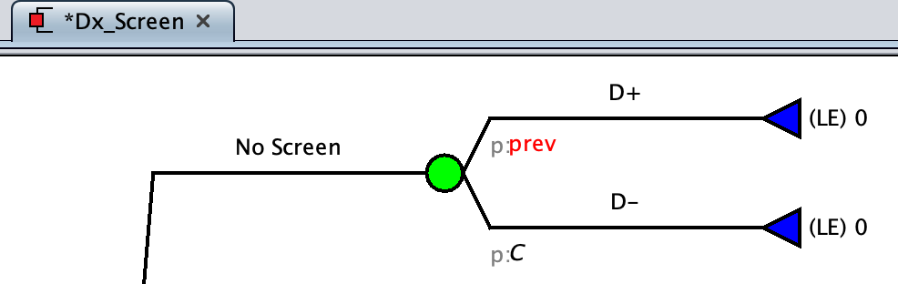
Define Probabilities for Screen Strategy
For the Test + branch enter
pTPosas the probability of testing positive, which will be a function of the disease prevalence and test characteristics (sensitivity and specificity).Enter
Cfor the probability of Test -.Next, we’ll define the probability of having the disease given each test result in the
Screenstrategy.On the Test + branch, click under the D+ branch and type
pD_TPos. This will be the probability of having the disease given a positive test.Click under D- and type
Cto indicate a complementary probability.For the Test - branch, click under the D+ branch and type
pD_TNeg, which is the probability of having the disease given a negative test.Click under D- below and type
Cagain.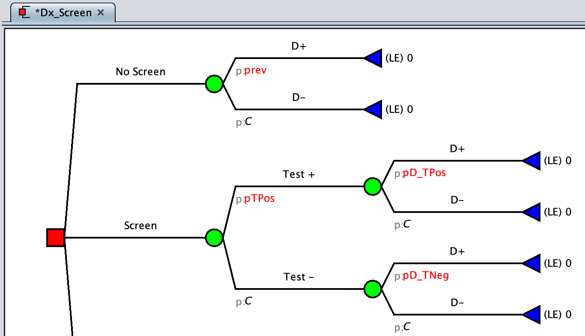
Finally, define the probability of having the disease in the
Treat Allstrategy.Click under D+ and type
prev, which is the prevalence of the disease.Enter
Cfor the probability of D-.
Step 7: Defining Payoffs
Now we will define the payoffs for each terminal node to model the consequences of each possible outcome.
To enter a payoff, click to the right of the terminal node. A text-box will appear outlined in blue. By default, the payoffs are set to 0, so we need to update these values.
In the
No Screenstrategy for D +, enterLateRxas the payoff, which we will define as the life expectancy for people who receive treatment late.- For D -, enter
NoDxas the payoff, which will be the life expectancy for people without the disease.
- For D -, enter
In the Screen strategy, only people who test positive will be treated.
- On the Test + branch, enter
Rxas the payoff for D + to indicate that these people will be treated. - For D-, enter
Toxas the payoff since these people are false positives and are negatively affected by the treatment toxicity. - On the Test- branch, enter
LateRxas the payoff for D + since these people have the disease but were not identified by the screening test. - For D -, enter
NoDxsince these people are true negatives.
- On the Test + branch, enter
Everyone will be treated in the
Treat Allstrategy. This is good for those with the disease, but not for those
without the disease.- For D +, enter
Rxas the payoff and for D - enterTox.
- For D +, enter
Your decision tree should now look like this:
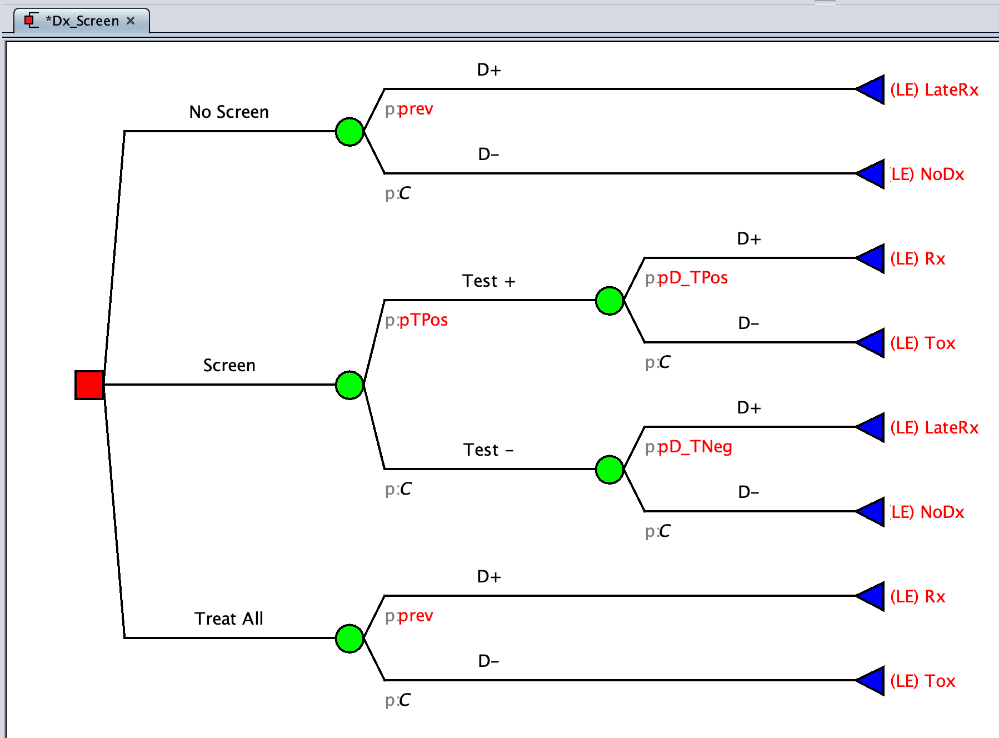
Step 8: Defining Parameters
We’ve entered the names of all of the probabilities and payoffs in the tree, but we haven’t yet defined the values for these parameters. We could have entered numeric values directly in the tree, but defining them as Parameters is more flexible and lets us perform sensitivity analyses later. Parameters are global in the model, which means that they can only be defined once and have the same value wherever they are used in the model.
- In the upper right-hand box of the program, you will see a blue sign:
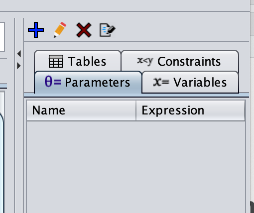
2. Add each parameter, one-by-one, with its corresponding value as detailed below:
| Parameter | Description | Value |
|---|---|---|
| prev | Disease prevalence | 0.05 |
| sens | Sensitivity of test | 0.97 |
| spec | Specificity of test | 0.9988 |
| pTPos | Probability of testing positive (based on Bayes’ theorem–more on this tomorrow!) | prev * sens + (1 - prev) * (1 - spec) |
| pD_TPos | Probability of having the disease given a positive test. | prev * sens / (prev * sens + (1 - prev) * (1 - spec)) |
| pD_TNeg | Probability of having the disease given a negative test. | prev*(1 - sens)/(prev * (1 - sens)+(1 - prev) * spec) |
| LateRx | Life expectancy if disease treated late | 25.2 |
| NoDx | Life expectancy if no disease | 40.3 |
| Rx | Life expectancy if treated | 35.8 |
| Tox | Life expectancy if treated, but do not have disease (due to Rx toxicity) | 39.4 |
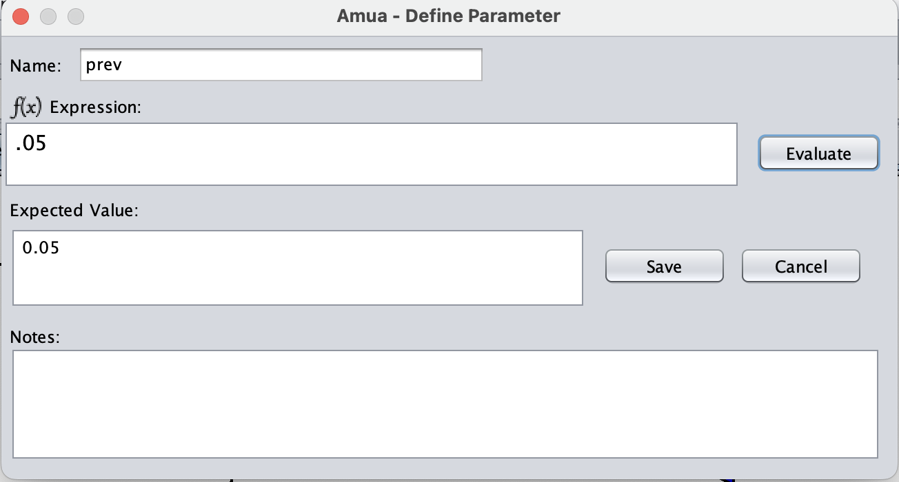
Step 9: Run the Model
While developing models you can click Check Model on the toolbar at any time to highlight any errors found.
When you are ready to run the model you can click Run Model, which will evaluate the model and display the results on the canvas and the console.
For this model we get the following results:
| Strategy | Life Expectancy |
|---|---|
| No Screen | 39.54 |
| Screen | 40.06 |
| Treat All | 39.22 |